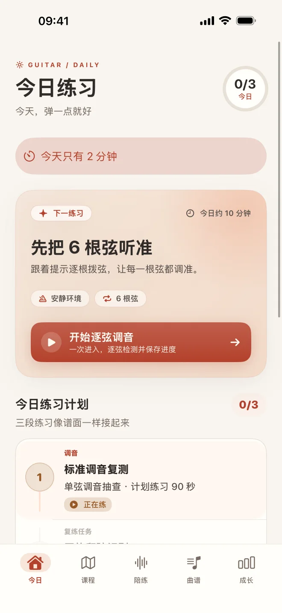
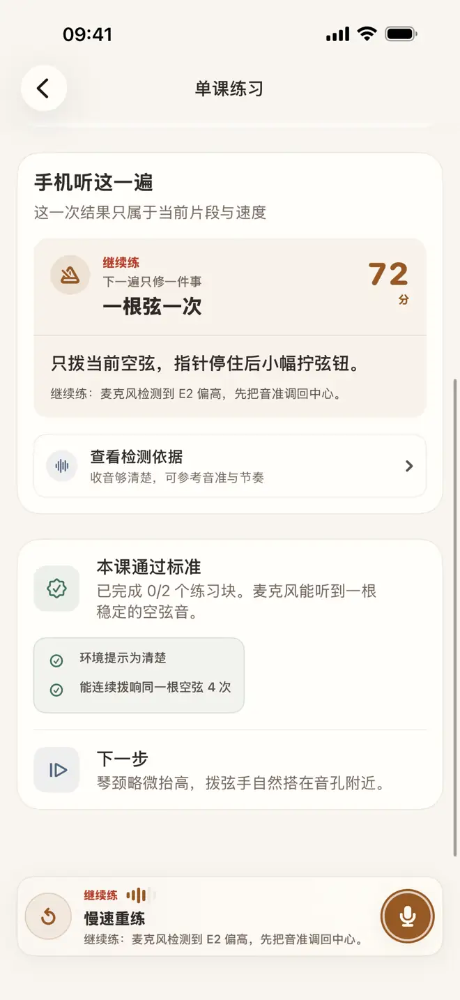
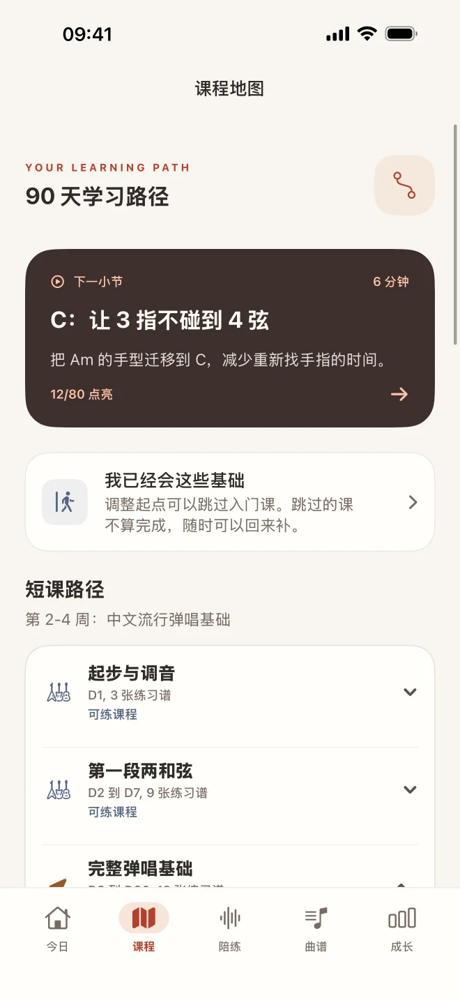
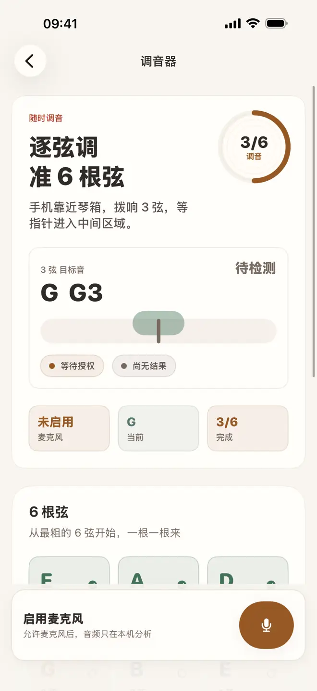
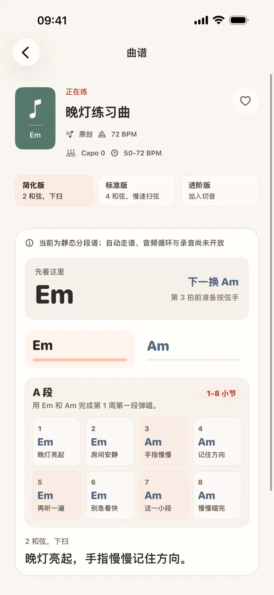
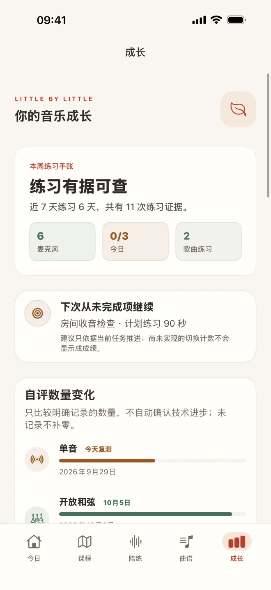
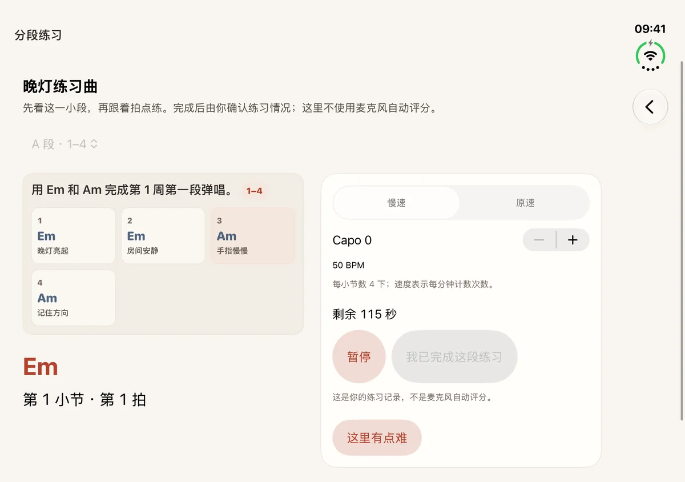
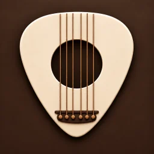

展开、合拢，继续当前任务
改善 Duo 不同姿态与旋转时的导航，以及今日、课程和成长页面的布局。页面按可用宽度安排内容。
1.5 已上架 · App Store 免费下载
每天留出 10-15 分钟。吉他自习室会把今天该练什么、怎么判断进步、卡住时先修哪里，整理成一条能跟下去的 90 天路径。
当前公开版本 1.5，支持 iOS / iPadOS 17.0 或更高版本。免费，无广告、订阅与内购。

每天的练习会结合当前进度、最近弱项和正在学的歌曲，安排成可以立刻动手的短任务。

听见结果，也看得懂下一步。
80 节短课覆盖 D1–D90，72 首材料提供静态和弦分段伴奏谱，五首精选材料支持计时片段反复练习。90 天用于组织课程，你可以放慢、复练或中断后再回来。以下为 1.5 沿用的普通 iPhone 发布界面（10 月 21 日采集），包含演示进度与合成示例音频，不代表真实学习效果。
使用左右方向键或水平滚动查看更多页面。




1.5 已上架
1.5 围绕 Duo 展开、合拢与旋转，以及可变窗口，重新整理练习与读谱操作。现已免费上架，旧版用户可直接在 App Store 更新。

改善 Duo 不同姿态与旋转时的导航，以及今日、课程和成长页面的布局。页面按可用宽度安排内容。
宽屏下在和弦谱旁调整速度与变调夹；切换布局保留当前读谱页、收藏和变调夹设置。
优化窄窗口、短窗口和大字号下的练习与设置操作，歌词提示完整换行，减少操作被挤到屏幕外的情况。
补充 VoiceOver 调音准备指引，修正阿拉伯语 C 和弦清晰度与计划练习时长提示。13 种界面语言继续提供。
零基础吉他入门
从吉他调音、开放和弦练习、常见扫弦节奏，到可以分段、变速练习的吉他谱，所有内容都围绕零基础学习者的真实进度组织。
从持琴、拨弦和六根弦调音开始，不跳过影响后续练习的基础动作。
围绕 Em、Am、C、G、D 等开放和弦，通过短练习和具体修正建立稳定的换弦动作。
用难度、速度和段落拆分练习曲，把和弦、扫弦、指弹基础与完整弹唱连起来。
一款面向零基础学习者的免费 iPhone 与 iPad 民谣吉他练习 App。公开版本 1.5 用 90 天路径、80 节短课和每日约 10 分钟的任务，帮助你逐步练习调音、和弦与歌曲片段。
适合第一次拿起民谣吉他、会按几个和弦却换手不稳，或希望沿明确路线练完第一首歌的学习者。
当前版本只对调音、单音和开放和弦做本机麦克风分析。听不清或证据不足时不会给出虚假分数，也不会把任务判为通过。
节奏、和弦切换和歌曲片段使用计时引导，由学习者确认完成或记录自评数值。本机节拍器只提供参考拍点，不评判节奏。
不需要账号。App Store 当前价格为免费，版本 1.5 没有广告、订阅或应用内购买。
检测音频不保存、不上传。主动演奏留档保存在本机，App 不会自动上传。主动开启统计后，友盟 SDK 会处理设备标识与设备／网络信息。首次安装默认关闭统计，原位更新沿用已有选择，主动同意后才初始化，可随时关闭；1.5 可由你主动导出演奏。
隐私与反馈
麦克风用于本机识别调音、单音和开放和弦，以及你主动开始的演奏录音。检测音频不保存、不上传；只有你主动创建的演奏留档会保存在本机，并且可以随时删除。
阅读完整隐私政策